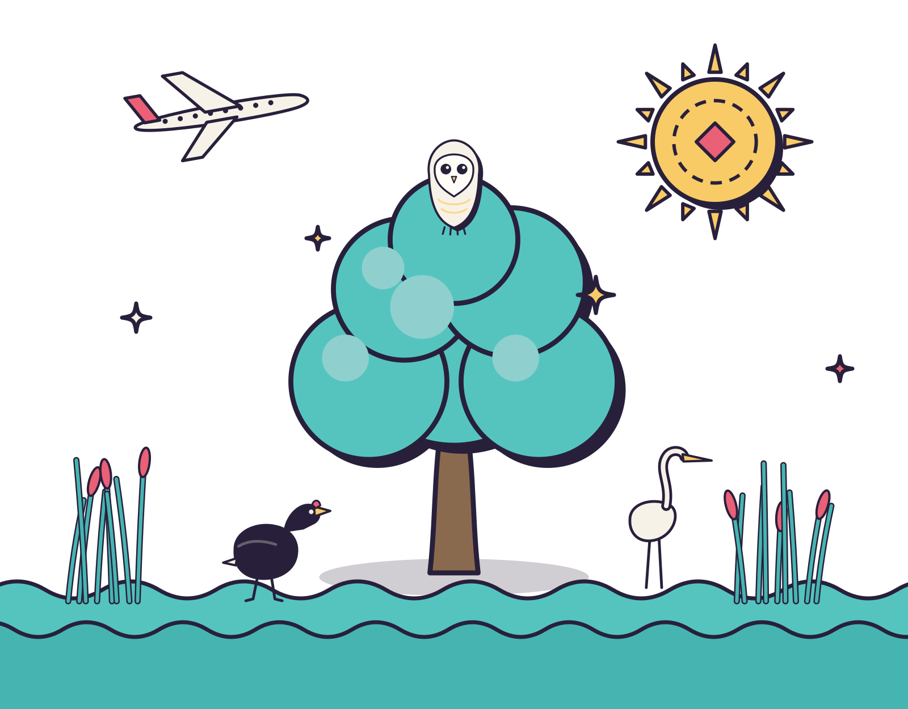
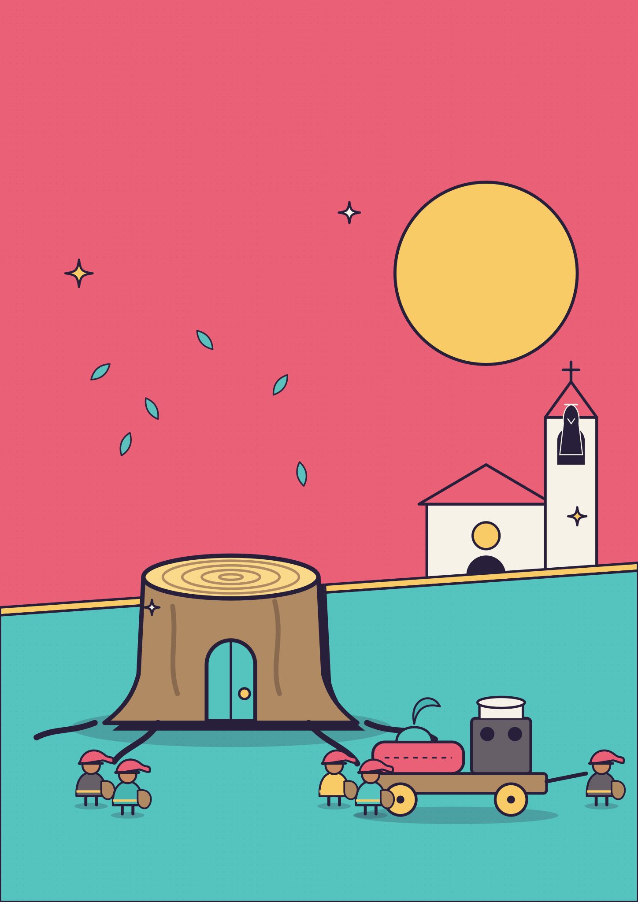
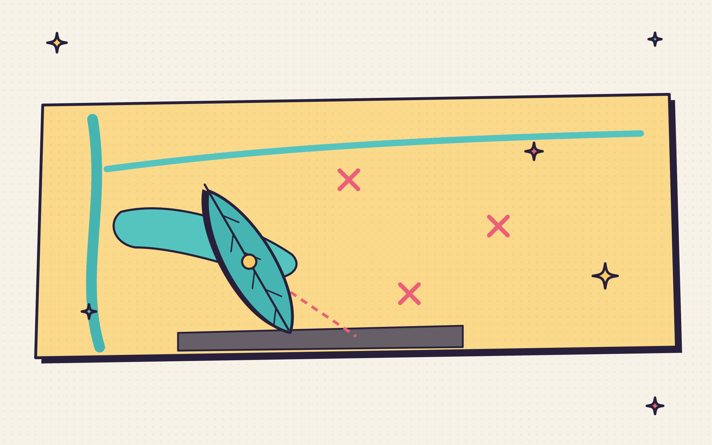
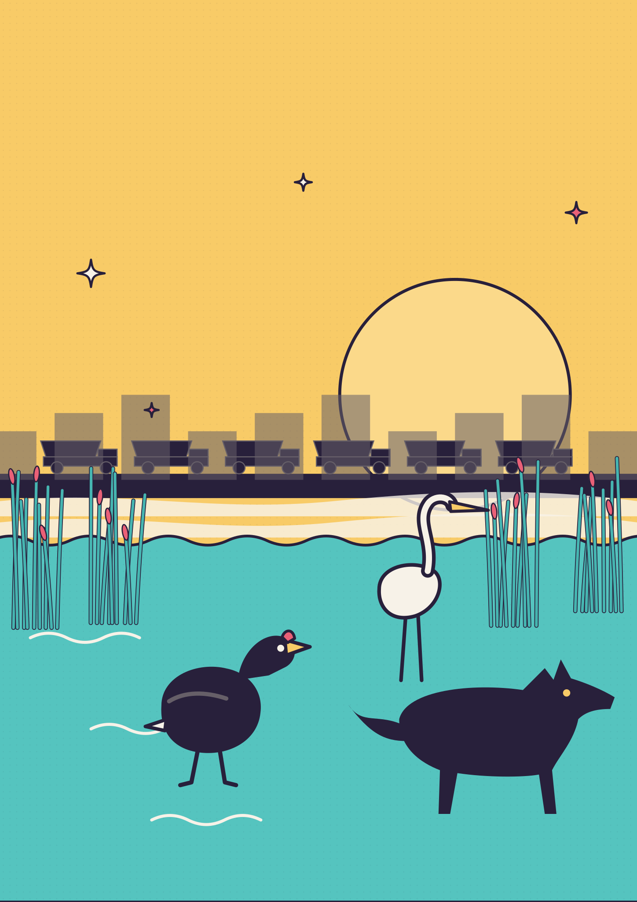
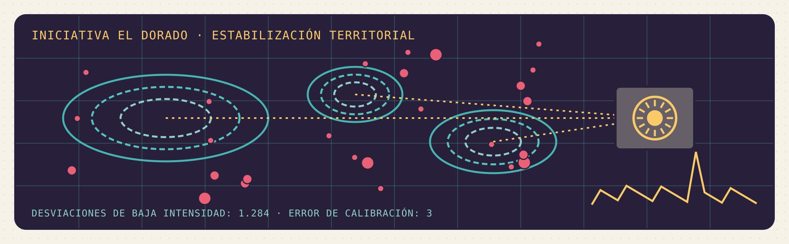
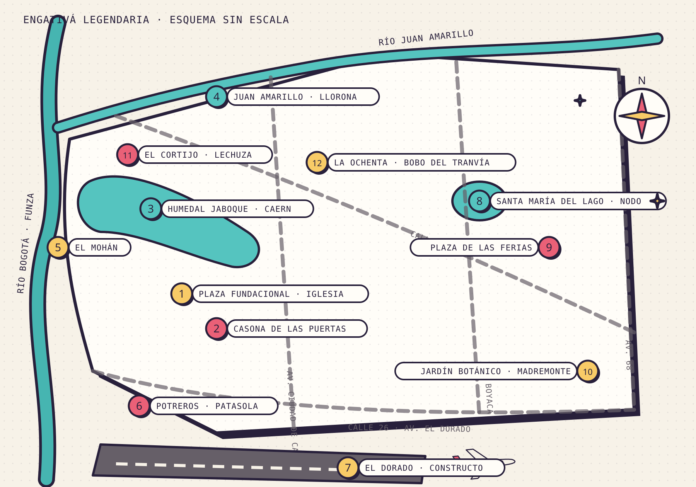
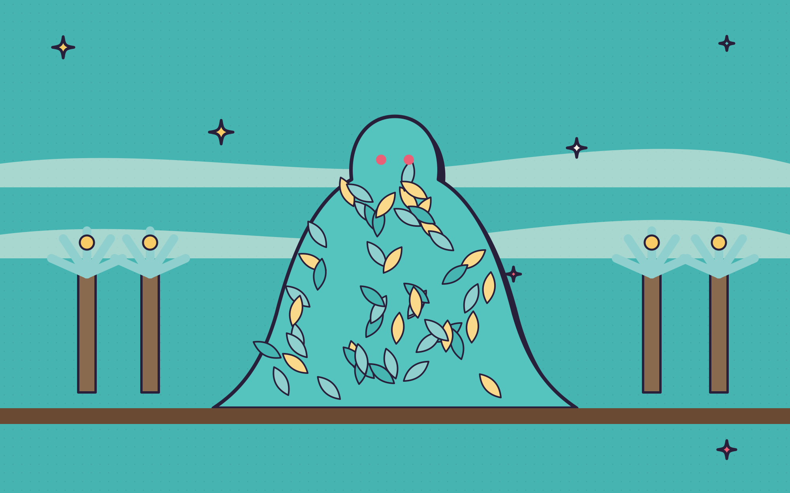

La Puerta del Sol.
Leyendas de Engativá y de Bogotá contadas desde el Mundo de Tinieblas: un humedal que recuerda, un árbol que cayó y una ciudad que todavía sueña.

La mesa de los sábados.
Engativá viene de Ingativá. Unos dicen que quiere decir tierra del sol; otros, señor de lo ameno y lo sabroso. Yo digo que quiere decir las dos cosas, y que por eso aquí nadie se quiere ir.
Llueve como llueve en Bogotá en marzo: de lado, con rabia, como si el cielo tuviera algo pendiente con la sabana. Ustedes llegaron mojados, se quitaron las chaquetas, se sirvieron tinto del termo y ya están mirando los dados como si los dados fueran a contar la historia solos. No. La historia la cuento yo, y ustedes la juegan. Así trabajamos en esta mesa.
Les voy a contar lo que pasó el año pasado, entre enero y el equinoccio, cuando tumbaron el eucalipto de la plaza fundacional. Ustedes saben cuál: ese palo inmenso que llevaba como doscientos años parado frente a la iglesia, el que veía pasar los buses, las procesiones, los novios y los borrachos. Lo cortaron un día de enero, y en marzo sembraron un roble chiquito en su lugar. Eso salió hasta en las noticias. Lo que no salió en las noticias es todo lo que pasó en el medio.
Porque cuando cae un árbol así no cae solo. Se caen los nidos, se caen las sombras, se caen los cuentos que la gente le colgaba. Y en este barrio, mijos, los cuentos pesan. Aquí llegaron familias de todo el país, muchas corridas por la violencia, y cada una trajo en la maleta su Llorona, su Mohán, su Patasola, su abuela que rezaba contra el mal de ojo. Todo eso se fue acomodando entre los humedales, el río y las casas de ladrillo, como se acomoda la ropa en un armario prestado.
Esta historia tiene tres caras, como los dados de tres colores que tienen ahí. Hay una cara de hadas, de sueños y de duendes en trasteo; la gente que juega Changeling la va a reconocer. Hay una cara de lobos, de espíritus y de un humedal que se defiende, que es la de Hombre Lobo. Y hay una cara de magos que discuten qué es real y quién tiene derecho a decidirlo, que es la de Mago. Pero es una sola historia, porque Engativá es una sola, aunque tenga trescientos barrios.
Antes de empezar, una advertencia, como siempre: nada de lo que les voy a contar le pasó a nadie de verdad. O casi nada. Los nombres son inventados. Las leyendas, en cambio, son de todos. Sírvanse otro tinto, que esto va para largo.
Arranquemos por el árbol.

El árbol.
Duendes en trasteo.
Lolo Garzón supo que algo andaba mal porque el pan amaneció triste.
No el pan de la panadería, que ese siempre estaba bueno, sino el pan quimérico, el que solo ven las hadas: las almojábanas de luz que doña Fide horneaba cada madrugada en el hueco de las raíces del eucalipto y que dejaba, envueltas en hojas, en la puerta de las casas donde había niños enfermos. Esa mañana de enero, la canasta que Lolo encontró colgada de la reja de la cacharrería tenía tres almojábanas grises, duras como piedra, y una nota escrita con letra temblorosa sobre una hoja de eucalipto: Mijo, venga rápido, que nos están sacando.
Lolo tenía diecinueve años, trabajaba en la cacharrería de su tía en Engativá Pueblo y era, aunque solo lo supieran unas pocas criaturas en toda la localidad, una pooka. Un hada de las que cambian de forma, de las que dicen mentiras por naturaleza y de las que se ríen más de lo que deberían. Su otra forma, la de verdad, la que se le salía cuando se asustaba o se enamoraba, era un curí: un cuy gordito, de pelo café y blanco, con unos bigotes que le temblaban. Él decía que era una forma de jaguar. Nadie le creía, y esa era precisamente la gracia.
Salió corriendo hacia la plaza con el delantal todavía puesto.
Ya habían llegado los de la motosierra. Una cuadrilla con chalecos naranja, un camión con grúa, cinta amarilla alrededor de la jardinera y un señor con un casco blanco y una tabla de papeles. La gente del pueblo miraba desde las bancas, desde la puerta de la iglesia, desde las tiendas. Algunos estaban de acuerdo, porque el árbol estaba viejo, se le caían las ramas, daba miedo con el viento. Otros lloraban sin disimulo. Una señora repetía una y otra vez que ese árbol la había visto casarse.
Lolo no miraba el tronco, sino lo que nadie más veía.
En la base del eucalipto, entre las raíces gruesas que levantaban el adoquín, se abría la puerta del feudo. Para los ojos de los Durmientes, como llaman los magos a la gente común, no era más que una grieta llena de tierra y colillas. Para los ojos de un hada era una puerta de madera tallada, pintada de verde y con un picaporte en forma de lechuza, y detrás de la puerta había un mundo entero: una cocina con fogón de leña, catorce cuartos, un patio con helechos y una escalera de caracol que subía por dentro del tronco hasta las ramas más altas, donde los duendes chiquitos dormían en hamacas de telaraña.
Esa puerta estaba abierta de par en par, y por ella salían los habitantes del feudo cargando lo que podían.
Doña Fide iba adelante, como siempre. Era una boggan, un hada de las de casa, de esas que no soportan ver un trapo sucio ni un niño con hambre. Medía lo que mide un niño de seis años, tenía las manos llenas de harina eterna y una ruana gris que le arrastraba. Detrás venía Toño, el troll, que en su forma quimérica tenía el tamaño de un bus y en su forma humana era el celador del parqueadero de la esquina. Cargaba en la espalda la estufa de leña entera, con las ollas encima. Después salían los niños: tres duendecitos nockers que se peleaban por una caja de herramientas, una sátira adolescente con un radio a todo volumen y un sluagh muy flaco, envuelto en sombras, que no decía nada y solo abrazaba un cuaderno.
—¡Lolo, mijo! —gritó doña Fide cuando lo vio—. Ayúdeme con la loza, que estos chinos me la van a quebrar.
—¿Y para dónde vamos, doña Fide?
La vieja se detuvo en mitad de la acera. Miró la motosierra, miró la iglesia, miró el cielo gris de enero. Y por primera vez desde que Lolo la conocía, no tuvo una respuesta.
La motosierra arrancó. Fue un ruido largo, metálico, que Lolo sintió en los dientes. Al primer corte, el feudo entero tembló. Las paredes de la cocina quimérica se pusieron transparentes, como papel mojado; la escalera de caracol se deshizo en hojas secas; las hamacas de telaraña se volvieron simplemente telarañas. Los duendes que todavía estaban adentro salieron a los saltos, cubiertos de aserrín, tosiendo.
Lo peor no fue el ruido, sino el frío. Un frío que no tenía nada que ver con enero. Lolo vio cómo a la sátira se le apagaba el radio en las manos, cómo a Toño se le doblaban las rodillas bajo la estufa, cómo el sluagh se encogía hasta casi desaparecer. Era la Banalidad: el aliento de la gente que no cree, que no sueña, que mira un árbol y solo ve leña. El señor del casco blanco estaba hecho de eso. No era malo, se le notaba en la cara; estaba cansado, tenía un horario que cumplir y una hija que recoger en el colegio. Pero cuando miraba el eucalipto, el eucalipto dejaba de ser mágico un poquito más.
—Vámonos —dijo Lolo, y agarró la caja de la loza—. Ya, ya, vámonos.
Bajaron por la calle principal del pueblo en procesión, como en una de esas romerías antiguas que llegaban al santuario de los Dolores. La gente de verdad veía a un muchacho con delantal cargando una caja, a un celador cargando un bulto y a unos niños jugando. Las hadas se veían a sí mismas como lo que eran: un pueblo entero en trasteo, con las ollas, los colchones y los santos encima, igual que tantas familias que habían llegado a Engativá en los años setenta y ochenta con lo que les cupo en un camión.
—Esto ya lo viví —murmuró doña Fide—. En el cincuenta y pico, cuando nos sacaron de la hacienda. Y después, cuando rellenaron el humedal grande. Una cree que ya se acostumbró, pero no.
En la esquina de la iglesia se detuvieron. Doña Fide se persignó a la carrera, por costumbre, y entonces Lolo vio algo que le heló la sangre: en el campanario, donde a esa hora no debía haber nadie, había una figura vestida de sotana negra. Tenía las manos juntas sobre el pecho, como rezando. No tenía cabeza.
—No lo mire —dijo doña Fide, jalándolo del delantal—. Ese no es de los nuestros. Ese es más viejo que nosotros.
—Doña Fide, es el cura sin cabeza. El de los cuentos.
—Pues por eso. Los cuentos también tienen dueño, mijo. Camine.
Esa noche durmieron en la trastienda de la cacharrería, entre ollas de aluminio, baldes, pitos de fiesta y velas de colores. Lolo le pidió a la tía permiso para «unos amigos que se quedaron sin casa», y la tía, que era buena gente y no preguntaba demasiado, les dejó una olla de aguapanela y una cobija de tigre.
No había espacio para todos. Toño durmió sentado. Los nockers desarmaron una licuadora. La sátira lloró un rato en silencio con los audífonos puestos. Y el sluagh, que se llamaba Sebastián aunque casi nadie lo supiera, se acercó a Lolo pasada la medianoche y le mostró el cuaderno que había salvado del feudo. Eran páginas y páginas de nombres escritos con letra menuda: los nombres de todas las personas que alguna vez se habían sentado bajo el eucalipto a contar un secreto.
—Si se pierden los nombres, se pierden los sueños —susurró Sebastián, con esa voz de los sluagh que suena como papel arrugado—. Necesitamos otro árbol. O una casa que quiera recibirnos.
—En este barrio no hay casas que reciban a nadie gratis, Sebas.
—Hay una —dijo el sluagh—. En la esquina de la carrera vieja. La casa de las puertas.
Lolo sintió que se le erizaba el pelo de curí que no tenía a la vista. Todo el mundo en Engativá Pueblo conocía la casona colonial de la esquina, la de los muros de adobe y las tejas de barro. Y todo el mundo sabía, aunque nadie lo dijera en voz alta, que esa casa tenía genio. Que cambiaba de puerta según quién viviera en ella. Que a unos los quería como a hijos y a otros los sacaba a sustos, nada más porque se veían distinto o pensaban distinto.
Y Lolo, que era pooka, gay y bastante distinto, sabía muy bien cuál de las dos cosas le iba a pasar a él.
La casa de las puertas.
La casona quedaba en una esquina de esas que ya casi no existen en Bogotá: muros gruesos encalados, ventanas con barrotes de madera, un portón grande y un balcón que daba a la calle. Llevaba años desocupada, con un aviso de se arrienda ya descolorido, aunque nadie recordaba haber visto a nadie arrendarla. Los vecinos decían que el dueño vivía en Miami. Las hadas decían que el dueño era la casa.
Lolo fue solo, a las once de la mañana de un martes, porque doña Fide le dijo que las casas viejas son como las abuelas: se ponen de mal genio en la noche y se ablandan con el sol. Llevaba una bolsa de pan de la panadería de verdad, un ramo de flores de la plaza y la mejor camisa que tenía, una de flores rosadas que su mamá odiaba.
La puerta de la casona ese día era azul. Lolo la había visto verde, roja, de hierro y hasta tapiada con ladrillo, según la semana. Ese día era una puerta azul de tablones, con un llamador de bronce en forma de mano.
Golpeó tres veces.
—Buenos días, señora casa —dijo, y se sintió ridículo—. Yo soy Lolo, de la cacharrería. Le traigo pan.
No pasó nada. Luego, muy despacio, la puerta azul se fue oscureciendo, como cuando una nube tapa el sol, hasta volverse negra. El llamador de bronce cerró los dedos en un puño. Por las rendijas de las ventanas salió un aire húmedo que olía a encierro, a naftalina y a algo más: a desprecio. Lolo lo conocía bien. Era el mismo olor que tenía la sala de su casa cuando su papá llegaba y lo encontraba con las uñas pintadas.
—Ah —dijo Lolo—. Ya veo.
Se dio media vuelta. Y entonces, por pura terquedad, porque era pooka y a los pookas no les gusta que les cierren la puerta, se dio media vuelta otra vez.
—¿Sabe qué, señora casa? Yo también tengo mal genio —dijo—. Y también me he quedado sola, digo, solo, en un cuarto oscuro, esperando que alguien golpee. A mí me echaron de mi casa a los diecisiete por ser como soy. Usted no es la primera puerta que se me pone negra. Pero allá en la cacharrería tengo a catorce duendes durmiendo entre baldes porque les tumbaron el árbol, y le juro por mi abuela que me voy a quedar aquí parado hasta que usted se digne a escucharme.
Se sentó en el andén, con el pan en las rodillas. Pasaron las once y media, las doce, la una. Pasó una señora con un perro, que lo miró raro. Pasó el bus. Pasó un señor vendiendo mazamorra, y Lolo le compró un vaso. A las dos de la tarde, la puerta negra crujió.
No se abrió. Pero en mitad de la madera apareció, como dibujada con tiza, una pequeña puerta lateral, del tamaño justo para un curí.
Lolo se rio en voz alta. Se transformó allí mismo, detrás de un poste, en esa forma que él seguía insistiendo en que era de jaguar, y entró a la casona.
Por dentro, la casa era más grande que por fuera, como pasa siempre con las casas que tienen alma. Había un patio central con una pila de piedra seca, corredores con baldosas de barro, cuartos cerrados con candados oxidados y, en la sala principal, un retablo de la Virgen de los Dolores con siete espadas de lata clavadas en el corazón. Encima de cada puerta interior había un retrato: los antiguos habitantes. Lolo los fue mirando uno a uno. Un hacendado de bigote, una monja, una familia campesina con los hijos en fila, una pareja de señoras muy mayores tomadas de la mano. Ese último cuadro estaba boca abajo.
—¿Por qué está volteado ese? —preguntó Lolo.
La casa no contestó con palabras. Las casas como esa son lo que los libros de Changeling llaman Inanimae: hadas que no viven en un cuerpo de carne sino en una cosa, un río, una piedra, un edificio. Hablan con crujidos, con corrientes de aire, con el olor de los cuartos. Y lo que la casona le dijo a Lolo, con un portazo en el segundo piso y un chorro de polvo desde el techo, fue clarísimo: esas no eran gente decente.
Lolo se acercó al cuadro. Con sus patitas de curí no podía voltearlo, así que volvió a su forma humana y lo enderezó con cuidado.
—Estas señoras vivieron aquí —dijo—. Se nota que la quisieron. Mire cómo se ven las baldosas, señora casa; mire la pila. Alguien la cuidó durante años. ¿Fueron ellas?
Silencio. Una corriente de aire tibio movió las cortinas.
—Fueron ellas —repitió Lolo—. Y usted las quiso. Las quiso mucho. Pero alguien le enseñó que no debía quererlas. El cura, la familia del hacendado, los vecinos. Le dijeron que esas dos eran una vergüenza, y usted se lo creyó, y desde entonces voltea el cuadro y le pone la puerta negra a todo el que le recuerde a ellas.
La casa crujió entera, de los cimientos a las tejas. En el retablo, una de las siete espadas de lata se soltó y cayó al suelo con un ruido seco.
Lolo se quedó en la casona hasta que oscureció. Barrió el patio. Le contó a la casa cómo era el feudo del eucalipto, cómo olía la cocina de doña Fide, cómo cantaban los nockers cuando arreglaban algo. Le habló de su mamá, que lo llamaba cada domingo a escondidas del papá. Le habló del muchacho que le gustaba, uno que repartía domicilios en moto y que siempre le pedía las bolsas de la cacharrería sin mirarlo a los ojos. Le contó mentiras también, porque era pooka y no podía evitarlo: que había sido campeón de tejo, que conocía a Shakira, que su forma de animal era un jaguar. La casa, por primera vez en mucho tiempo, se rio. Lolo lo supo porque la pila del patio, seca desde hacía años, dejó escapar un chorrito de agua.
Cuando salió, la puerta de la casona era de color amarillo pollito.
—No le estoy diciendo que sí —le advirtió Lolo a doña Fide esa noche, en la trastienda—. Le estoy diciendo que me abrió una puertica. Hay que ir despacio.
—Despacio no tenemos —dijo la vieja boggan, y señaló a Sebastián.
El sluagh estaba en un rincón, encorvado sobre su cuaderno de nombres. Las páginas se estaban borrando. No de golpe, sino de a poquitos, como se borra la tinta vieja con la humedad. Los nombres de las personas que habían contado secretos bajo el eucalipto se iban desvaneciendo uno por uno, y con ellos algo se iba apagando en el barrio: Lolo lo sentía como se siente un cambio de clima en los huesos. Gente que de pronto dejaba de saludarse en la tienda. Niños que ya no jugaban en la plaza. Un frío de Banalidad que avanzaba desde el tronco cortado.
—Y eso no es todo —dijo Toño, el troll, que casi nunca hablaba—. Anoche, haciendo la ronda en el parqueadero, vi pasar las volquetas.
—¿Cuáles volquetas?
—Las que van para el humedal. Pasan a las tres de la mañana, sin luces. Y no van llenas de escombros, Lolo. Van llenas de algo que se mueve.
El Bobo que corría detrás del sueño.
Lolo no tenía cómo saber que, mientras él barría el patio de la casona, otra criatura de Bogotá se había despertado de un sueño de setenta años.
Pasó en la Ochenta, a la altura de la estación de Transmilenio de la Granja, una noche de lluvia. Una señora que iba en el último articulado de la ruta lo vio primero y no le dio importancia: un muchacho corriendo por el separador detrás del bus, con un vestido de paño viejo, una corbata torcida y un paquete de bizcochos bajo el brazo. Corría con una alegría absurda, como si llegar al bus fuera lo más importante del mundo y a la vez no importara en absoluto. La señora pensó que era un loco. Después pensó que era un actor, de esos que hacen cosas raras para los videos de internet. Después el bus aceleró, y el muchacho aceleró con él, y la señora se dio cuenta de que iban a sesenta kilómetros por hora y él no se cansaba.
Se bajó en la siguiente estación con el corazón en la boca y no le contó a nadie, porque quién le iba a creer.
Las hadas sí lo vieron. Y lo reconocieron enseguida, porque en Bogotá todo el mundo ha oído hablar del Bobo del Tranvía, aunque ya casi nadie se acuerde de quién era. El muchacho que corría detrás del tranvía por la calle Octava con carrera Décima, en el centro, en los años en que la ciudad todavía tenía tranvías. Uno de esos personajes que la gente de antes llamaba «locos de Bogotá», como la Loca Margarita, que se vestía de rojo, o el Negro Chivas, que miraba fijo el sol en la plaza de Las Nieves. Personajes que la ciudad quiso a su manera, entre la burla y la ternura, y que después olvidó.
Según la historia que contaban las abuelas, la hermana del Bobo, cansada de que él le espantara a los pretendientes, le pidió que se gastara el pasaje en bizcochos y que corriera detrás del tranvía para acompañarla. Y él lo hizo, día tras día, feliz, hasta que el tranvía dejó de pasar. Hasta el nueve de abril de 1948, cuando la ciudad ardió y los tranvías también.
Lo que corría ahora por la Ochenta no era el Bobo, que había muerto hacía mucho, sino su quimera: el recuerdo colectivo de un muchacho alegre, hecho de cariño y de culpa, que la ciudad había soñado tantas veces que terminó cobrando forma en el Ensueño. Llevaba décadas dormido en algún rincón del centro, en un depósito de la memoria, y algo lo había despertado.
Lolo lo encontró tres noches después, gracias a la sátira, que se llamaba Daniela y que tenía una cuenta de TikTok donde subía videos de «cosas raras de Bogotá». Uno de sus seguidores había grabado al muchacho corriendo detrás de un SITP por la avenida Ciudad de Cali. En el video no se veía nada, solo luces y lluvia. Pero Daniela, que tenía ojos de hada, le subió el brillo y lo vio clarito: el vestido de paño, los bizcochos, las piernas largas.
—Va para el occidente —dijo—. Siempre para el occidente. Como si estuviera persiguiendo algo que va para el aeropuerto.
Lo esperaron en el paradero de la Ciudad de Cali con calle 72, una noche de jueves, con un paquete de bizcochos de la panadería de la esquina. Cuando el Bobo pasó corriendo detrás del bus, Lolo silbó y le mostró el paquete. El muchacho frenó en seco, como frenan los perros cuando oyen su nombre, y se acercó dando saltitos.
—¿Son de los de mantequilla? —preguntó. Su voz sonaba como una radio vieja, con estática.
—De los de mantequilla —mintió Lolo, que no tenía ni idea.
El Bobo se sentó en el andén, abrió el paquete con un cuidado infinito y se comió un bizcocho en tres mordiscos. Después miró a Lolo con unos ojos que eran dos ventanitas de tranvía, iluminadas por dentro.
—Mi hermana se fue para allá —dijo, y señaló hacia el occidente, hacia donde el cielo nocturno brillaba anaranjado con las luces del aeropuerto—. Ella siempre se va y yo corro detrás. Pero ahora no es ella. Ahora es el río.
—¿El río?
—El río viene subiendo —dijo el Bobo, muy serio, con la boca llena de migas—. El río viejo, el de antes de la ciudad. Viene subiendo con el señor del sombrero. Y la señora que llora viene con él. Y la mano, la mano peluda, esa sale de los huecos. Yo los oigo desde el tranvía. Todos van para el humedal. Todos van para la puerta.
—¿Qué puerta?
Pero el Bobo ya se había levantado. Un bus azul del SITP pasó frente al paradero, con las luces del interior encendidas y casi vacío, y el muchacho salió corriendo detrás de él con el paquete de bizcochos bajo el brazo, feliz, increíblemente rápido, hasta perderse en la lluvia.
Esa noche, de vuelta en la trastienda, Lolo extendió sobre el mostrador un mapa viejo de Bogotá que la tía tenía enrollado detrás de los baldes. Con un marcador rojo fue señalando lo que sabía: la plaza fundacional, con el tronco cortado; la casona de las puertas; el río Bogotá, que los muiscas llamaban Funza y que marca el borde occidental de la localidad; el humedal Jaboque, que se estira como una cicatriz verde entre los barrios y el río; y, al sur, la mancha gris del aeropuerto El Dorado.
—Todo está conectado —dijo, más para sí mismo que para los demás.
—Todo está conectado siempre, mijo —respondió doña Fide—. La pregunta es quién está halando los hilos.
Doña Fide sacó de su ruana una hoja de eucalipto seca, la única que se había traído del feudo, y la puso encima del humedal Jaboque. La hoja se movió sola, despacio, como una aguja de brújula, hasta apuntar hacia el aeropuerto.
—En el humedal vive gente que nos puede ayudar —dijo la vieja—. Pero no son hadas, y no les gusta que los visiten sin avisar. Son lobos.
—¿Lobos? En Bogotá no hay lobos, doña Fide.
—Ay, Lolo. Usted tampoco es un jaguar, y mírese.

«Los cuentos también tienen dueño, mijo.»

El humedal.
La tingua y el caern.
A Julián Ayala le decían el Chulo desde el colegio, porque era flaco, de cuello largo, vestía siempre de negro y tenía la mala costumbre de aparecerse donde había problemas. Tenía veintitrés años, una moto de segunda que había pagado a cuotas y una maleta térmica de domicilios a la espalda. Y desde los quince sabía que era un garou: un hombre lobo, hijo de una tribu que los libros llaman Roedores de Huesos, la de los lobos de la calle, los de los barrios, los que comen de la basura y defienden a los que nadie defiende.
En Bogotá no hay lobos, eso es verdad. Pero hay garou, y siempre los ha habido, porque los garou no son animales sino guerreros de Gaia, la madre tierra, y donde hay tierra que defender aparecen. Julián se transformaba pocas veces, y siempre de noche, lejos de la gente. Su forma de batalla, la Crinos, era una bestia de dos metros y medio, de pelo negro y crespo, con unas orejas enormes que, según él, eran lo único que había heredado de su papá. Cuando la Rabia le subía, los Durmientes que lo veían sufrían el Delirio: olvidaban lo que habían visto, o lo recordaban como un perro grande, un atraco o una pesadilla.
Esa madrugada de enero, Julián no estaba de domicilios. Estaba sentado en una piedra a la orilla del Jaboque, con los pies en el barro, viendo amanecer sobre el humedal, porque doña Rosalba lo había mandado llamar.
El Jaboque a esa hora es otra cosa. Los buses de la Ochenta todavía no hacen ruido, las casas de ladrillo de Villa Teresita y San José Obrero apenas tienen las luces de las cocinas encendidas, y sobre el agua quieta se levanta una neblina blanca que tapa los juncos. Se oyen los pájaros antes de verlos: las garzas que se pelean, las monjitas, los patos, y de pronto ese grito raro, como una risa ahogada, que es la tingua bogotana llamando a su pareja. Los muiscas, que llamaban a este lugar «tierra de abundancia», pescaban aquí, cazaban aquí, se inundaban aquí cada vez que el río se crecía. Debajo de esa neblina, Julián lo sabía, había más de mil años de gente queriendo este pedazo de agua.
Y debajo de todo eso estaba el caern.
Un caern es un lugar sagrado para los garou, un sitio donde el mundo de los espíritus, la Umbra, está tan cerca del mundo físico que se puede tocar. Los hay en las montañas, en los bosques, en los desiertos. El caern del Jaboque era pequeño y humilde, como casi todo en Engativá: un círculo de juncos en un rincón del humedal, cerca del río, donde el agua nunca se secaba ni en verano. Los garou de la zona lo llamaban el Caern de la Tingua, porque su tótem, el espíritu protector, era una tingua de pico rojo que solo se dejaba ver al amanecer.
—Llegó tarde, mijo —dijo doña Rosalba, saliendo de la neblina.
Rosalba Tinjacá tenía setenta y dos años y caminaba con bastón, pero Julián la había visto partirle el espinazo a un fomori con ese mismo bastón. Era una garou de la tribu Uktena, los guardianes de los secretos antiguos, y era la guardiana del caern desde antes de que existieran los barrios que lo rodeaban. Había sido lavandera en el río cuando era niña, cuando el agua todavía era clara y las mujeres extendían la ropa sobre el pasto. Ahora era la que organizaba las jornadas de limpieza del humedal con la junta de acción comunal, la que regañaba a los que botaban colchones al agua y la que les enseñaba a los niños del colegio a reconocer las aves.
—Me dijo a las cinco, doña Rosa. Son las cinco y cuatro.
—Pues tarde. Siéntese.
Se sentaron juntos en la piedra. Doña Rosalba sacó un termo de tinto y dos pocillos de peltre. Se quedaron un rato en silencio, oyendo a los pájaros.
—¿Usted ha visto las volquetas? —preguntó por fin la vieja.
—¿Las de los escombros? Claro. Pasan todas las noches por la calle de atrás. El barrio ya puso como tres denuncias.
—No son escombros, mijo.
Doña Rosalba se levantó, se apoyó en el bastón y echó a andar hacia el borde del humedal, donde la neblina se ponía gris y el pasto daba paso a una franja de tierra removida, llena de ladrillos rotos, varillas, bolsas plásticas y llantas viejas. Era el relleno. El mismo relleno que llevaba sesenta años comiéndose el Jaboque de a poquito: primero con las obras del aeropuerto y de la avenida El Dorado, entre 1948 y 1958, que le cortaron un brazo entero al humedal; después con las fincas, con las urbanizaciones, con los barrios que la gente levantó con sus manos porque no tenía dónde vivir. Julián había crecido viendo cómo el agua retrocedía y el ladrillo avanzaba.
Pero ese relleno era distinto. Julián lo olió antes de verlo. Era un olor dulce, enfermo, a fruta podrida y a aceite quemado. Un olor que todo garou conoce desde el primer día, porque es el olor de su enemigo: el Wyrm, la fuerza de la corrupción, de la destrucción sin sentido, la que convierte los ríos en cloacas y la gente en monstruos.
—Mire —dijo doña Rosalba, y le señaló un charco entre los escombros.
El agua del charco era negra y espesa, y se movía sola. De pronto, de la superficie salió una mano. Una mano peluda, enorme, el doble de una mano normal, con uñas largas y amarillas. Tanteó el borde del charco, agarró un ladrillo, lo apretó hasta volverlo polvo y se volvió a hundir, despacio, como un animal que vuelve a su madriguera.
Julián sintió que la Rabia le subía por la espalda como agua hirviendo.
—Tranquilo —dijo doña Rosalba, poniéndole el bastón en el pecho—. Tranquilo. Si se transforma aquí, me espanta a la tingua.
Esa noche, Julián siguió a las volquetas.
No en la moto, que hacía demasiado ruido, sino a pie, en su forma de lobo, la Lupus. Un perro negro y grande, de los que hay a montones en los potreros del occidente de Bogotá, que nadie miraba dos veces. Las volquetas salieron a las tres de la mañana de un patio cerrado, sobre la avenida Ciudad de Cali, sin luces y sin placas visibles. Eran seis. En las puertas tenían un logotipo pequeño, casi borrado: Rellenos y Adecuaciones La Sabana S.A.S.
Las siguió por calles de tierra, por detrás de los conjuntos residenciales, hasta un portón de lata que daba a la orilla del humedal. Allí, unos hombres con overoles grises y tapabocas descargaban el contenido de las volquetas directamente sobre el agua. Julián se acercó entre los juncos, con el hocico pegado al suelo. Los hombres no hablaban, no fumaban, no miraban el celular. Se movían como máquinas. Y cuando uno de ellos se quitó el tapabocas para escupir, Julián vio que tenía la boca llena de dientes de más, dientes pequeños y negros que le crecían hasta el paladar.
Fomori. Personas que le han abierto el cuerpo al Wyrm y se han dejado habitar por una Perdición. Casi siempre trabajan para Pentex, la gran empresa del Wyrm, que tiene cientos de filiales con nombres aburridos en todo el mundo: petroleras, farmacéuticas, empresas de aseo. Rellenos y Adecuaciones La Sabana S.A.S. tenía toda la pinta de ser una de esas.
Julián contó a los fomori: ocho. Demasiados para un solo garou, aunque fuera un Roedor de Huesos con mucha rabia acumulada. Se quedó quieto, aprendiéndose las caras, los horarios y el número del portón.
Y entonces oyó el llanto.
Lavanderas.
Venía del norte, de donde el humedal se acerca al río Juan Amarillo. Era un llanto largo, desgarrador, que subía y bajaba como el viento. Los fomori lo oyeron también y se detuvieron por primera vez. Uno de ellos dejó caer la pala. Otro se tapó los oídos con las manos. Y Julián, que en su forma de lobo tenía un oído mucho más fino que el de cualquier humano, sintió que se le erizaba todo el pelo del lomo.
Dejó a los fomori y siguió el llanto a través de la neblina. Pasó por debajo de una cerca de alambre, cruzó un potrero donde dormían dos caballos de zorrero y llegó a la orilla de un canal de agua oscura que olía a jabón y a alcantarilla. Allí, sentada en una piedra, con los pies en el agua, había una mujer.
Era flaca y alta, con un vestido largo que alguna vez fue blanco y un cabello negro que le llegaba hasta la cintura y se le metía en el agua. Lloraba con la cara entre las manos. A su lado había una batea de madera, de esas que usaban las lavanderas antes, y encima de la batea, un bulto envuelto en una sábana.
Julián volvió a su forma humana, despacio, para no asustarla. Se quedó en cuclillas a unos metros, desnudo y temblando de frío, porque cuando un garou cambia de forma la ropa no viene con él.
—Señora —dijo—. Señora, ¿usted está bien?
La mujer dejó de llorar. Levantó la cara. No tenía rostro: solo una sombra, un hueco oscuro donde debía haber unos ojos y una boca. Pero Julián no tuvo miedo. Tuvo algo peor: tuvo lástima.
—Yo no soy de aquí —dijo la mujer, con una voz que sonaba como agua corriendo sobre piedras—. Yo soy del Tolima. De Natagaima. Me trajeron en un camión en el ochenta y cinco, con mis hijos y una gallina. Mi marido se quedó allá. Yo lavaba ropa en el Magdalena y aquí también lavé ropa, en el Juan Amarillo, cuando el agua todavía servía para algo. Yo no maté a nadie, joven. Eso dicen de mí, que yo maté a mi hijo y que por eso lloro, pero no es verdad. A mi hijo me lo mataron. Y a otros hijos de otras. Y yo lloro por todos.
Julián tragó saliva.
—¿Usted es la Llorona?
—Soy una de ellas. Hay muchas. Cada pueblo trae la suya. —La mujer acarició el bulto de la batea—. En Antioquia me dicen María Pardo; en Nariño, Tarumama. Aquí llegamos varias. Nos trajeron en las maletas, en las canciones, en los cuentos que las mamás les contaban a los hijos para que no se acercaran al río de noche. Y aquí nos quedamos, en los humedales, porque los humedales se parecen a los ríos de allá.
—¿Y qué hace aquí esta noche? —preguntó Julián.
La Llorona señaló hacia el occidente, hacia el río Bogotá, que corría oscuro y lento al otro lado de los potreros.
—Esperando al viejo —dijo—. Al señor del río. Viene subiendo desde el Salto, desde el Magdalena, desde muy lejos. Hace años que no sube hasta aquí, porque el Funza está muy enfermo y le duele. Pero ahora viene. Algo lo llamó.
—¿El Mohán?
La mujer no contestó. Se volvió hacia el agua y empezó a lavar el bulto de la sábana, despacio, con una ternura infinita, frotándolo contra la batea como se frota la ropa de un niño. Y Julián vio que dentro de la sábana no había ningún niño muerto, como dicen los cuentos, sino barro. Barro del humedal, negro y lleno de basura, que la mujer lavaba y lavaba hasta dejarlo limpio. Cada vez que frotaba, el agua del canal se aclaraba un poquito.
—Dígale a la vieja Rosalba —dijo la Llorona sin mirarlo— que las lavanderas volvimos. Que no vamos a dejar que nos tapen el agua otra vez.
Cuando Julián le contó todo a doña Rosalba, al amanecer, en la piedra del caern, la vieja se quedó callada un rato largo. Después sacó del bolsillo de la ruana un tabaco envuelto en hoja de plátano, lo encendió con un fósforo y le dio tres caladas largas, echando el humo hacia los cuatro puntos cardinales.
—Mi abuela era lavandera en este río —dijo—. Y la abuela de ella. Las lavanderas de la Sabana, les decían. Bajaban con las bateas al Funza, extendían la ropa en el pasto y cantaban. Y cuando el río se crecía, le dejaban tabaco en las piedras al viejo para que no se las llevara. —Hizo una pausa—. Usted sabe cómo se llamaba el río, ¿cierto, mijo?
—Funza.
—Funza. Varón poderoso, quiere decir. —Doña Rosalba miró hacia el occidente, donde el río Bogotá corría detrás de los potreros, gris, lento, oliendo a todo lo que la ciudad le echaba encima—. Mírelo ahora. Ya no le queda nada de poderoso. Le echan los químicos de las curtiembres de arriba, las fábricas, las aguas negras de toda la ciudad. Cuando llega al Salto ya está muerto. Y el Mohán vive en ese río. O vivía.
El Mohán sube por el Funza.
El Mohán llegó la noche del primero de febrero, con la luna llena.
Julián lo esperó en la orilla del río Bogotá, donde el Jaboque casi toca el cauce, junto con doña Rosalba y otros tres garou de la manada: Yesenia, una Hija de Gaia que trabajaba de enfermera en el hospital de Engativá; el Mono Pacheco, un Roedor de Huesos como él, mecánico de motos, con más tatuajes que piel; y Camila, una Furia Negra muy joven, una de esas lobas de la tribu que solo acepta mujeres y que protege los lugares salvajes, con una chaqueta de cuero y una paciencia muy corta.
Llevaban ofrendas, porque así se recibe al Mohán: tabaco, aguardiente, una totuma de chicha que Yesenia había conseguido en una tienda de la Perseverancia, y un espejito, porque a los espíritus del agua les gustan las cosas que brillan.
Primero llegó el olor: a tabaco, a monte mojado, a pescado fresco. Después el río se quedó quieto, completamente quieto, como si alguien le hubiera puesto un vidrio encima. Y después, en la mitad del cauce, donde el agua era más oscura, empezó a subir un sombrero.
Era un sombrero enorme, de paja, de ala ancha, de esos que usan los pescadores del Magdalena. Debajo del sombrero subió una cabeza llena de pelo, una barba larguísima, enredada con algas y con bolsas plásticas, unos hombros cubiertos de barro y dos ojos rojos que brillaban como brasas. No tenía cara, o la tenía tan cubierta de pelo y de barro que no se le veía. Era grande, más grande que un garou en Crinos, y cuando terminó de salir del agua se sentó en la orilla con un gruñido largo, como de animal viejo.
—Buenas noches, abuelo —dijo doña Rosalba, y le ofreció el tabaco con las dos manos.
El Mohán lo agarró, lo olió, lo encendió sin fósforo, solo soplándole encima, y le dio una calada tan larga que el tabaco se consumió entero en un segundo. Después se tomó la botella de aguardiente de un trago. Después se quedó mirando el espejito durante mucho tiempo.
—Estoy viejo —dijo por fin, y su voz sonaba como una creciente—. Estoy viejo y enfermo, Rosalba. Me duelen las piedras. Me arden los peces. Ya no puedo subir más allá del Salto sin que se me caiga la barba a pedazos. Ustedes me envenenaron el agua.
—Nosotros no, abuelo.
—Ustedes, los de la ciudad. Todos. —El Mohán escupió al río, y el escupitajo hizo un hueco que tardó en cerrarse—. Pero no vine a pelear. Vine porque me llamaron. Se cayó el árbol grande, el del pueblo, y yo lo sentí desde el Tequendama. Ese árbol era una de las puertas, y cuando se cae una puerta se abren las otras.
—¿Qué puertas? —preguntó Julián, sin poder aguantarse.
El Mohán lo miró con sus ojos de brasa. Julián sintió que lo estaba pesando, como se pesa un pescado.
—Este cachorro no sabe nada, Rosalba.
—Es joven, abuelo. Explíquele.
Entonces el Mohán les contó la historia de las puertas. La contó a su manera, como cuentan los viejos del río, saltando de un tiempo a otro y mezclando lo que pasó con lo que debió pasar.
Les dijo que antes de que existiera Bogotá, cuando la sabana era un lago enorme, los dioses de la gente de aquí se pelearon. Que Chibchacum, el dios de la lluvia y el patrón de Bacatá, se enojó con la gente y le mandó una inundación tan grande que cubrió toda la sabana. Que la gente le rezó a Bochica, el sabio de barba blanca que había llegado del oriente para enseñarles a tejer y a sembrar, y que Bochica golpeó la roca con su bastón y abrió el Salto del Tequendama para que el agua se fuera. Que como castigo, Chibchacum quedó condenado a cargar la tierra sobre los hombros, y que cuando se cansa y se la cambia de hombro, la tierra tiembla.
—Y Huitaca —dijo el Mohán, y por primera vez su voz se volvió suave—. Huitaca, la que enseñó a bailar. La que les dijo a las mujeres y a los hombres que podían gozar, que podían querer a quien quisieran, que la vida no era solo trabajo y obediencia. Bochica la odiaba, porque ella deshacía todo lo que él enseñaba. Y la castigó. La volvió lechuza. Una lechuza blanca que vuela de noche.
—¿Y qué tiene que ver eso con el humedal? —preguntó Camila, la Furia Negra, que no tenía paciencia para los cuentos.
—Todo, niña. Todo. Cuando Bochica secó la sabana, no la secó entera. Dejó charcos. Los humedales son lo que quedó del lago, ¿no lo sabían? Y en esos charcos quedaron las puertas: los lugares donde todavía se puede pasar de un lado al otro, del mundo de ustedes al mundo de los espíritus, al mundo de los sueños. El árbol del pueblo era una puerta. El Jaboque es otra. Hay otras más: en Santa María del Lago, en el Juan Amarillo, en los potreros donde ahora aterrizan los aviones. La gente de antes las cuidaba. Ahora alguien las está cerrando, una por una.
—Las volquetas —dijo Julián.
—Las volquetas son lo de menos. —El Mohán se levantó, enorme, chorreando agua negra—. Las volquetas son las manos. Busquen la cabeza. La cabeza está en el aeropuerto, donde brillan las luces. Allá hay gente que quiere que la sabana sea solo pista, solo cemento, solo números. Y hay otra gente, peor, que quiere que sea podredumbre. Las dos se están ayudando sin saberlo.
Volvió a meterse al río. El agua se lo tragó despacio, primero los hombros, después la barba, después el sombrero.
—Y cuidado con la de un solo pie —dijo antes de desaparecer—. Anda suelta por los potreros del aeropuerto, y está muy brava.
La de un solo pie apareció tres noches después.
Julián la vio desde la moto, cuando volvía de un domicilio en Álamos, por la avenida que bordea la cerca del aeropuerto. Primero vio la huella: una sola huella de pie descalzo, enorme, marcada en el barro del separador, y luego otra, y otra, a saltos de tres metros, sin pareja. Después vio, entre los eucaliptos que crecen junto a la malla del aeropuerto, una figura de mujer altísima, con el cabello enmarañado hasta los tobillos, que saltaba sobre una sola pierna con una velocidad imposible. Llevaba algo agarrado de la mano: un hombre con overol gris que gritaba y pataleaba.
Era uno de los fomori de las volquetas.
Julián frenó, dejó la moto contra la malla y corrió. Cuando llegó al potrero, la mujer de un solo pie había soltado al fomori, que yacía en el pasto temblando, con la boca llena de barro y de dientes negros. Ella estaba parada sobre su única pierna, inmóvil como una garza, mirándolo. Tenía unos ojos enormes y una boca enorme, y Julián, que había visto muchas cosas, sintió que la Rabia se le encogía de miedo por primera vez en su vida.
—Ese es de los que tapan el agua —dijo la Patasola, con una voz como de hojas secas—. Ese es de los que se llevan a los niños. A mí me quitaron a los míos. Yo no dejo que les quiten los suyos a otras.
—No lo mate —dijo Julián, y no supo bien por qué lo dijo.
La Patasola lo miró durante un rato muy largo. Después se agachó sobre el fomori, le arrancó del cuello una placa metálica con el logotipo de la empresa y se la tiró a Julián.
—Lléveselo a la vieja —dijo—. Que vea para quién trabajan. Y dígale que si las lobas no cuidan el agua, la cuidamos nosotras.
Y se fue saltando entre los eucaliptos, hacia el occidente, hacia donde brillaban las luces de la pista.
La placa que Julián le llevó a doña Rosalba esa madrugada tenía dos logotipos grabados, uno encima del otro. El de Rellenos y Adecuaciones La Sabana S.A.S., y debajo, más pequeño, uno que ninguno de los garou de la manada conocía: un sol geométrico, de líneas perfectas, encerrado en un círculo, con unas letras finísimas alrededor.
Iniciativa El Dorado · Gestión de Riesgo Territorial · Consorcio Aeroportuario.
—Esto no es del Wyrm —dijo el Mono Pacheco, dándole vueltas a la placa entre los dedos grasientos—. Esto es demasiado limpio. Esto huele a la Tejedora.
En la cosmología de los garou, el mundo lo sostienen tres fuerzas. El Wyld, que crea, que es caos y vida salvaje. La Tejedora, que ordena, que construye, que le pone nombre y forma a las cosas. Y el Wyrm, que destruye, que al principio era necesario para que las cosas viejas dejaran lugar a las nuevas y que ahora está loco y lo corrompe todo. La Tejedora tampoco está muy cuerda: quiere que todo sea red, cemento, estadística. Y donde la Tejedora teje demasiado, el Wyrm encuentra grietas para meterse.
—Las dos se están ayudando sin saberlo —repitió doña Rosalba, citando al Mohán—. La cabeza está en el aeropuerto.
—¿Y qué hacemos? —preguntó Camila—. ¿Nos metemos al aeropuerto a romper cosas? Eso está lleno de policías, de cámaras, de militares.
—No. —Doña Rosalba apagó el tabaco contra la piedra—. Para el aeropuerto necesitamos a alguien que entienda cómo piensan los que tejen. Alguien que hable su idioma. Y yo conozco a una, aunque no me cae muy bien.
—¿Quién?
—La yerbatera de Las Ferias. La que vende ruda y caléndula en la plaza. Esa muchacha es maga.
«La cabeza está en el aeropuerto, donde brillan las luces.»
La Puerta del Sol.
La yerbatera de Las Ferias.
En el puesto número cuarenta y siete de la plaza de mercado de Las Ferias, entre un señor que vende queso campesino y una señora que vende tamales tolimenses los domingos, está el puesto de Valentina Chaparro. Tiene un letrero pintado a mano que dice Yerbas y Remedios Doña Ofelia, aunque doña Ofelia, la abuela de Valentina, murió hace cuatro años. Valentina nunca quiso cambiarlo.
Venden ruda para la buena suerte, caléndula para las heridas, manzanilla para los cólicos, eucalipto para la tos, toronjil para los nervios y paico para los parásitos, que todavía hay gente que lo pide. Venden velas de colores, esencias en frasquitos y unos sobres de papel con mezclas que la abuela inventó y que Valentina prepara cada noche en su cocina, siguiendo un cuaderno escrito con letra de maestra rural: Para el mal de ojo. Para que vuelva. Para que se vaya. Para dormir sin soñar.
Valentina tenía veintinueve años, una trenza larga que le llegaba a la cintura, las uñas siempre verdes de tanto manipular hojas y una cicatriz en la ceja izquierda que se había ganado a los dieciséis, el día que salió de su casa en Natagaima con una maleta y un nombre nuevo. Su mamá no la había vuelto a llamar. Su abuela sí. Su abuela fue la que la recibió en Bogotá, en el apartamentico de Las Ferias, la que le dijo mija desde el primer día sin equivocarse ni una sola vez, la que le enseñó a distinguir la ruda macho de la ruda hembra y a rezar el Magnificat al revés para cortar las malas energías.
Y fue con su abuela, en ese apartamento, una noche de lluvia, cuando Valentina Despertó.
No hubo rayos ni visiones. La abuela estaba enferma, muy enferma, con los pulmones llenos de agua, y Valentina estaba preparando un emplasto de eucalipto y mostaza como decía el cuaderno. Y de pronto, mientras machacaba las hojas, entendió. No supo qué entendió, pero entendió: que las hojas sabían lo que tenían que hacer, que el eucalipto quería abrir los pulmones de su abuela, que bastaba con pedírselo bien. Le puso el emplasto, le cantó lo que la abuela le había enseñado, y esa noche la abuela respiró tranquila por primera vez en semanas. Vivió dos años más.
Los magos de la Tradición de la Verbena la encontraron poco después. Una señora de Suba, otra de Bosa y un señor muy viejo de Usme, todos yerbateros, todos con el mismo brillo en la mirada. Le explicaron que lo que ella tenía era un Avatar despierto, una chispa de conciencia capaz de cambiar la realidad, y que su manera de hacerlo, su paradigma, era el de las plantas, la sangre y los ciclos de la vida. Le explicaron también lo de la Paradoja: que si la magia se hacía de forma demasiado evidente, demasiado imposible a los ojos de la gente común, la realidad se defendía, y el castigo podía ser terrible. Por eso Valentina hacía su magia como la hacía su abuela: en los remedios, en los rezos, en las cosas que la gente ya creía posibles.
Esa mañana de febrero, cuando doña Rosalba Tinjacá llegó al puesto cuarenta y siete con su bastón y su ruana, Valentina la reconoció enseguida. Las dos se habían visto antes, en reuniones de la junta del humedal, y no se habían caído bien. Doña Rosalba pensaba que los magos eran unos arrogantes que creían que el mundo era suyo para cambiarlo a su antojo. Valentina pensaba que los garou eran unos brutos que lo resolvían todo a mordiscos.
—Necesito que me ayude, mija —dijo doña Rosalba, sin saludar.
—Buenos días, doña Rosa. ¿Qué necesita? ¿Ruda? ¿Romero para las rodillas?
—Necesito que se meta al aeropuerto.
Valentina no dijo nada. Le sirvió un tinto en un vaso de icopor y la escuchó mientras le contaba lo de las volquetas, lo del Mohán, lo de la Patasola y lo de la placa con el sol geométrico. Cuando doña Rosalba terminó, Valentina sacó de debajo del mostrador una pluma blanca, larga y suave, y la puso sobre las hierbas.
—Esto me lo trajeron hace una semana —dijo—. Lo encontré en la ventana de la cocina, a las tres de la mañana. La dejó una lechuza blanca.
—¿La bruja del Cortijo?
—Eso dicen los vecinos. Que en el Cortijo, por los parques de los conjuntos, anda una bruja que se vuelve perro negro o lechuza. —Valentina acarició la pluma—. Yo creo que es otra cosa. Yo creo que es Huitaca.
Esa tarde, Valentina cerró el puesto temprano y fue al humedal Santa María del Lago.
Santa María del Lago es el humedal más pequeño y más cuidado de Engativá, rodeado de edificios de apartamentos, no muy lejos de la avenida Boyacá y de la Ochenta. Tiene senderos, un aula ambiental, letreros que explican las aves y una cerca de malla. Pero tiene también una historia larga de manos que lo quisieron vender: lo remataron en 1911, un expresidente compró parte de sus tierras en 1936, y durante décadas lo usaron como botadero de escombros, hasta que en los años noventa los vecinos y una fundación lo defendieron y la Corte Constitucional dijo que era de todos.
Para Valentina, Santa María del Lago era algo más. Era un Nodo: uno de esos lugares donde la Quintaesencia, la energía primordial que alimenta la magia, brota de la tierra como el agua de un manantial. Los magos de la Verbena de Bogotá lo usaban desde hacía décadas, con discreción, para recargar sus talismanes y hacer los rituales grandes. Allí la habían iniciado sus maestros. Allí se sentaba cuando necesitaba pensar.
Esa tarde, el Nodo estaba casi seco.
Valentina lo sintió apenas cruzó la portería. El aire, que normalmente le zumbaba en la piel como un enjambre de abejas, estaba quieto. Las plantas de la orilla, que ella sentía siempre como una conversación de vecinas, estaban calladas. Caminó hasta el centro del sendero, hasta el punto donde la Quintaesencia brotaba con más fuerza, se arrodilló en la tierra, cerró los ojos y extendió su percepción, como le habían enseñado, usando la Esfera de Cardinal, la que permite sentir el flujo de esa energía primordial.
La Quintaesencia del Nodo estaba saliendo, pero no hacia arriba, como siempre, sino de lado. Hacia el suroccidente. Por debajo de la tierra, en hilos finísimos y perfectamente rectos, como cables de fibra óptica, la energía del humedal se iba drenando hacia un único punto.
Valentina abrió los ojos. No le hizo falta un mapa para saber hacia dónde apuntaban esos hilos.
Hacia el aeropuerto El Dorado.
Iniciativa El Dorado.
La ingeniera Paula Rengifo llegó a la reunión con diez minutos de anticipación, como siempre, con un portátil, una carpeta de argollas y una taza térmica de café de origen. Tenía treinta y ocho años, un posgrado en gestión de riesgos en una universidad extranjera, un apartamento en Ciudad Salitre con vista a las pistas y una manera de hablar que hacía que la gente de las juntas de acción comunal se sintiera pequeña. No era a propósito. Simplemente no sabía hablar de otra manera.

La reunión era en un salón de la casa de la cultura del barrio, con sillas plásticas y un videobeam que no funcionaba bien. Paula representaba al consorcio de la Iniciativa El Dorado, un proyecto de «gestión de riesgo territorial» asociado a la ampliación del aeropuerto. En las diapositivas, que tuvo que proyectar desde el celular, había mapas, gráficas, porcentajes de ocupación de la ronda del humedal, curvas de inundación, tasas de sedimentación y una palabra que se repetía en cada página: estabilización.
Lo que Paula no decía, porque no podía decirlo ahí, era que trabajaba para el Sindicato.
El Sindicato es una de las cinco Convenciones de la Tecnocracia, la gran organización de magos que cree, o dice creer, que la realidad debe ser una sola, medible, predecible y segura para todos. El Sindicato se ocupa del dinero, de los contratos, de las licencias, de la economía: la magia más poderosa del mundo moderno, aunque casi nadie la llame magia. Paula había Despertado a los veinticuatro años, en una sala de juntas, mirando una hoja de cálculo, cuando entendió de golpe que el valor de las cosas no estaba en las cosas, sino en lo que la gente acordaba que valían. Desde entonces su paradigma era ese: la realidad es un acuerdo, un contrato, y quien redacta el contrato decide qué es real.
La Iniciativa El Dorado era su proyecto más ambicioso. Consistía en algo muy sencillo de explicar y muy difícil de hacer: convertir el occidente de Bogotá, con sus humedales, sus potreros, sus barrios y sus leyendas, en un territorio estable. Sin anomalías. Sin inundaciones imprevistas, sin invasiones ilegales, sin rellenos clandestinos. Y también sin aquello que su equipo llamaba, en los informes internos, «desviaciones de baja intensidad»: gente que ve lechuzas blancas a las tres de la mañana, muchachos que corren detrás de los buses a sesenta kilómetros por hora, señoras que lloran junto a los canales, sombreros enormes que suben por el río.
Para lograrlo, el equipo de Paula había instalado sensores en todo el borde del aeropuerto. Sensores de nivel de agua, de calidad del aire, de ruido, de movimiento. Y otros más, que no aparecían en ningún pliego de condiciones, que medían cosas que la ciencia de los Durmientes todavía no sabe medir. Todos esos datos llegaban a un centro de cómputo en un hangar del aeropuerto, una construcción gris sin ventanas que los magos de la Tecnocracia llaman, con orgullo, un Constructo: un lugar donde su paradigma es ley y la realidad se comporta como ellos dicen.
En el centro del Constructo, sobre una base de acero, Paula había hecho instalar una réplica a escala de la balsa muisca, la de oro, la que está en el Museo del Oro y que muestra al cacique de Guatavita en su ceremonia, rodeado de sus acompañantes. No era una decoración. Era un foco, un objeto que concentraba el sentido. Porque el nombre de El Dorado, que los funcionarios eligieron en los años cincuenta para recordar la cultura indígena de la sabana, había terminado convirtiendo el aeropuerto en un lugar con un poder simbólico enorme. Y Paula, que entendía de símbolos tanto como de contratos, lo estaba usando: los hilos de Quintaesencia que salían de los Nodos de los humedales convergían en la balsa, y la balsa alimentaba los sistemas del Constructo, que a su vez reescribían, dato a dato, la realidad del occidente de Bogotá.
Valentina llegó a la reunión con un ramo de ruda envuelto en papel periódico y se sentó en la primera fila. Cuando Paula terminó la presentación, levantó la mano.
—Una pregunta, ingeniera. ¿Sus sensores miden lechuzas?
Hubo risas en el salón. Paula sonrió con educación, pero sus ojos se endurecieron. Reconoció a Valentina enseguida, no por su cara, sino por lo que era: lo que la Tecnocracia llama una desviada, una maga de las Tradiciones, una de esas personas que creen que la realidad se puede cambiar con hierbas y rezos.
—Medimos todo lo que afecta la estabilidad del territorio, señora.
—Señorita —corrigió Valentina, con una calma helada que había practicado durante trece años—. Y si miden todo, entonces sabrán que el Nodo de Santa María del Lago se está secando. Y el del Jaboque. Y que el agua de los dos se está yendo, por debajo de la tierra, hacia su hangar.
El silencio del salón se volvió espeso. Los vecinos no entendían de qué estaba hablando aquella muchacha de la trenza. Paula sí.
—No sé de qué me habla —dijo.
—Claro que sabe. —Valentina se levantó y le entregó el ramo de ruda—. Para la buena suerte, ingeniera. La va a necesitar. Porque usted cree que está estabilizando el territorio, pero lo que está haciendo es dejarlo sin defensas. Y en el humedal hay algo que está esperando eso. Algo que no sale en sus gráficas. Algo que se pudre.
Paula agarró el ramo de ruda por reflejo. Se quedó mirándolo mientras Valentina salía del salón.
Esa noche, sola en su apartamento de Ciudad Salitre, frente a la ventana que daba a las pistas, Paula Rengifo abrió los registros de los sensores del borde norte del aeropuerto. Pasó por alto, como siempre, las anomalías que su sistema clasificaba como «baja intensidad». Pero se detuvo en una que no había visto antes, una que el sistema había etiquetado en rojo y luego, automáticamente, había archivado como error de calibración. Contaminación química severa en el humedal Jaboque, en un punto que según su mapa no tenía ningún vertimiento autorizado. Sedimentos con metales pesados. Y un registro de movimiento, a las 3:14 de la madrugada, de seis vehículos pesados sin identificación que entraban por un portón que, según sus planos, pertenecía a un contratista de su propio consorcio.
Rellenos y Adecuaciones La Sabana S.A.S.
Paula buscó el nombre en el sistema de contratación. La empresa tenía un contrato de «adecuación de terrenos» firmado por su propia oficina hacía ocho meses. Lo había firmado ella, entre otros cuarenta documentos, una tarde de viernes. Y la empresa matriz de esa empresa, cuando siguió la cadena de propietarios hacia arriba, resultó ser una filial de una filial de un conglomerado internacional que su propio jefe le había prohibido investigar.
Paula sabía qué era Pentex. Todos en la Tecnocracia lo sabían, aunque nadie lo dijera en voz alta. Una corporación que la Unión toleraba porque era útil, porque pagaba, porque era demasiado grande para enfrentarla. Una corporación que, según los rumores, no trabajaba para nadie humano.
Se quedó mirando el ramo de ruda, que había dejado en un vaso con agua sobre el mesón de la cocina. Una de las hojas se había puesto negra.
Chibchacum se mueve.
El temblor llegó un martes de comienzos de marzo, a media mañana. No fue muy fuerte, de esos que apenas mueven las lámparas. Se cayeron algunos vidrios, se agrietó una pared en el colegio de Engativá Pueblo y la gente salió a la calle en pijama o con el delantal puesto. A los dos minutos ya había memes en internet.
Pero en el Ensueño, en la Umbra y en los Nodos, fue otra cosa.
Lolo lo sintió en la casona de las puertas, donde ya vivían la mitad de los duendes del eucalipto, acomodados en los cuartos que la casa les había ido abriendo de a poquito, uno por semana, como quien presta una cobija. La casona crujió entera, y todas sus puertas, las de adentro y la de afuera, se pusieron al mismo tiempo de todos los colores. En el patio, la pila se desbordó. En el retablo, otras dos espadas de lata se cayeron del corazón de la Virgen.
Julián lo sintió en el caern de la Tingua. El agua del humedal se levantó en una ola pequeña y negra, y de los charcos del relleno salieron decenas de manos peludas, que tantearon el aire, agarraron lo que encontraron y se volvieron a hundir. La tingua, el tótem del caern, chilló como nunca antes.
Valentina lo sintió en el puesto cuarenta y siete. Todas las hierbas del puesto se marchitaron a la vez, y luego, en el mismo segundo, volvieron a florecer. Y supo, porque su abuela se lo había contado de niña, lo que significaba.
—Chibchacum se cambió la tierra de hombro —murmuró—. Se cansó.
Esa noche se reunieron por primera vez los tres, en el único lugar de Engativá donde podían estar juntos sin pelearse: la trastienda de la cacharrería.
Lolo había puesto una mesa plegable entre los baldes y las ollas, y doña Fide había hecho chocolate con queso y almojábanas de las de verdad. Julián llegó con doña Rosalba, que no quiso sentarse en ninguna silla y se quedó de pie con el bastón. Valentina llegó con su cuaderno de remedios y la pluma blanca de lechuza. Toño, el troll, cuidaba la puerta. Sebastián, el sluagh, estaba en un rincón con su cuaderno de nombres, que ya tenía más de la mitad de las páginas en blanco.
Al principio fue difícil. Julián, que no estaba acostumbrado a ver hadas, no sabía para dónde mirar: a sus ojos, doña Fide era una viejita de ruana y Toño un celador gordo, pero a veces, de reojo, alcanzaba a ver la cocina quimérica, la estufa de leña, los nockers colgados del techo. Valentina, que veía la magia como flujos de energía, veía a los duendes como pequeños remolinos de Glamour y a los garou como dos hogueras de Rabia contenida. Y Lolo, que lo veía todo con ojos de hada, veía a Julián, el Chulo, el de los domicilios, el que siempre le pedía las bolsas sin mirarlo a los ojos, convertido en un lobo negro de orejas enormes que no sabía dónde poner las manos.
—Yo a usted lo conozco —dijo Lolo.
—Yo también a usted —dijo Julián, y se puso rojo hasta las orejas.
Doña Fide tosió fuerte, y empezaron.
Cada uno contó lo que sabía. Lolo, lo del eucalipto, la casona y el Bobo del Tranvía, que corría siempre hacia el aeropuerto. Julián, lo de las volquetas, la mano peluda, la Llorona, el Mohán y la Patasola. Valentina, lo de los Nodos que se secaban, los hilos de Quintaesencia, el Constructo del hangar y la ingeniera del Sindicato. Y poco a poco, sobre la mesa plegable, con un marcador rojo y el mapa viejo de la tía, fueron armando el rompecabezas.

—Son puertas —resumió Valentina—. El Mohán tiene razón. Los humedales, el árbol, los ríos. Son lugares donde el mundo de ustedes —señaló a Lolo—, el de ustedes —señaló a Julián— y el mío se tocan. En el Ensueño se llaman feudos. En la Umbra, caerns. Para los magos, Nodos. Pero son las mismas puertas, vistas desde lados distintos.
—Y la Tecnocracia las está cerrando para drenarlas —dijo Julián.
—Y Pentex aprovecha que están cerradas para envenenarlas —completó doña Rosalba—. Cuando una puerta se cierra mal, se pudre por dentro. El Wyrm entra por ahí.
—Y la Banalidad sale por ahí —añadió doña Fide—. Por eso se están borrando los nombres del cuaderno de Sebas. La gente está dejando de soñar en este barrio, y ni se dan cuenta.
—¿Y qué tiene que ver el temblor? —preguntó Lolo.
—Chibchacum —dijo Valentina—. El que carga la tierra. Cuando la tierra pesa demasiado, se cansa. Y este territorio pesa más que nunca: cemento, relleno, pista, contaminación, y ahora las puertas cerradas. Si sigue así, el próximo temblor no va a ser de cuatro.
Se quedaron callados. Afuera, en la calle, pasó un bus. Pasó un perro. Pasó, muy rápido, un muchacho con vestido de paño y un paquete de bizcochos bajo el brazo, corriendo hacia el occidente.
—El equinoccio —dijo de pronto Sebastián, el sluagh, desde su rincón. Todos se voltearon a mirarlo. Era la primera vez que hablaba delante de tanta gente—. El 20 de marzo. La noche y el día miden casi lo mismo. Los muiscas lo sabían. Engativá era la Puerta del Sol. Esa noche las puertas se pueden abrir todas al mismo tiempo, o cerrar todas para siempre.
—¿Cómo sabes eso, Sebas? —preguntó Lolo.
El sluagh le mostró el cuaderno. En la única página que no se había borrado había un nombre escrito con una letra antiquísima, de pluma de ave, en una lengua que ninguno de ellos sabía leer. Debajo, con letra más reciente, alguien había anotado la traducción: Huitaca estuvo aquí. Volverá cuando se abra la puerta.
Antes de despedirse, Valentina sacó del bolso el ramo de ruda. No el que le había regalado a Paula, sino otro, gemelo, que había preparado con las mismas hojas y el mismo rezo. Todas sus hojas estaban negras menos una.
—Esta es la ingeniera —dijo, señalando la hoja verde—. Se le está muriendo la suerte a todo el que trabaja en ese hangar. Menos a ella.
—¿Y eso qué quiere decir?
—Que está dudando. —Valentina guardó el ramo—. Y que una tecnócrata que duda vale más que diez que obedecen.
Al día siguiente, Valentina fue al Jardín Botánico, que también está en Engativá, sobre la calle 63, aunque mucha gente lo olvide. Fue sola, temprano, cuando apenas abrían, con la pluma de lechuza en el bolsillo. Caminó entre los páramos de mentiras, los bosques andinos sembrados a mano, los frailejones que alguien había traído de muy lejos para que los niños de Bogotá supieran cómo eran. Y en el rincón más húmedo del bosque de niebla, junto a una piedra cubierta de musgo, encontró a la Madremonte.
No tenía forma fija. Primero fue un remolino de hojas. Después una señora muy vieja vestida de musgo, con los ojos rojos y la cara gris como la ceniza. Después, por un instante, una mujer gigantesca, mitad mujer y mitad monte, con el pelo de bejucos y los brazos de raíces. Valentina se arrodilló en la tierra, como le había enseñado su abuela, y le ofreció lo único que tenía: un sobre de semillas de caléndula, de las de su puesto.
—Hija de yerbatera —dijo la Madremonte, con una voz de lluvia en el bosque—. Ustedes los de la ciudad siempre vienen a pedir.
—Sí, señora.
—¿Y qué me vas a pedir tú?
—Que me preste un árbol —dijo Valentina—. Para el veinte de marzo. Para la plaza de Engativá. Uno que quiera crecer allá, aunque sea chiquito, aunque tarde doscientos años en ser grande. Uno que sea de aquí, de la sabana, no de Australia, como el eucalipto. Uno que pueda ser puerta otra vez.
La Madremonte se quedó en silencio un rato largo. Las hojas del bosque de niebla dejaron de moverse.
—Un roble —dijo por fin—. Un roble de los de aquí. Los muiscas los respetaban. Pero el roble no va a ser puerta solo porque tú lo siembres, hija. Para que un árbol sea puerta, la gente tiene que sentarse debajo a contar sus cosas. Tiene que quererlo. Tiene que soñarlo. Eso no lo hago yo. Eso lo hacen ustedes.

«Eso no lo hago yo. Eso lo hacen ustedes.»
Equinoccio.
La noche del 20 de marzo no llovió. Fue una de esas noches raras de Bogotá, limpias y frías, con el cielo lleno de estrellas que normalmente la contaminación no deja ver. La luna estaba en cuarto creciente. En el occidente, las luces del aeropuerto brillaban como siempre, rojas y blancas, ordenadas, perfectas.
El plan era sencillo, porque no había tiempo para uno complicado. Tenían que abrir las puertas, todas a la vez, en la noche del equinoccio, cuando el día y la noche miden casi lo mismo. Y para eso había que hacer cuatro cosas al mismo tiempo, en cuatro lugares distintos de Engativá.
En el Jaboque, los garou harían un rito de limpieza en el caern de la Tingua. En Santa María del Lago, Valentina haría su propio ritual para devolver la Quintaesencia al Nodo. En la plaza fundacional, las hadas harían lo único que las hadas saben hacer de verdad: una fiesta. Y en el aeropuerto alguien tendría que romper la balsa.
Ese alguien, para sorpresa de todos, se había ofrecido sola.
Paula Rengifo había llamado a Valentina el 15 de marzo, a las once de la noche, desde un número desconocido. No se disculpó ni dio explicaciones. Dijo solamente: Usted tenía razón. Hay contaminación en el Jaboque que yo no autoricé. Pentex está usando mi proyecto. No puedo pararlo desde adentro sin perderlo todo. Pero puedo hacer que un sensor falle durante quince minutos, la noche del equinoccio.
—¿Por qué me dice esto, ingeniera?
Hubo un silencio largo en la línea.
—Porque se me murió la ruda —dijo Paula—. Y porque cuando era niña, mi abuela me contaba lo de la lechuza blanca, y yo le decía que eso no existía. Y la otra noche vi una en la ventana de mi apartamento, en un piso dieciocho, en Ciudad Salitre. Y por primera vez en catorce años no supe cómo clasificarla.
En el Jaboque
A las once de la noche, la manada del caern de la Tingua se reunió en el círculo de juncos. Doña Rosalba, con su bastón, en el centro. Julián, el Mono Pacheco, Yesenia y Camila a su alrededor, en sus formas de lobo. Y en el borde del círculo, como invitadas que no habían pedido permiso, la Llorona de Natagaima con su batea, sentada en una piedra, y la Patasola, inmóvil sobre su única pierna entre los eucaliptos del fondo.
El rito de limpieza de un caern no es bonito. Es un trabajo duro, sucio, que se hace con las manos y con los dientes. Los garou se metieron al humedal y empezaron a sacar, uno por uno, los escombros del relleno envenenado: las llantas, las varillas, las bolsas negras, los ladrillos. Cada cosa que sacaban la llevaban hasta el centro del círculo, donde doña Rosalba la tocaba con el bastón y le cantaba algo en una lengua muy vieja, mitad muisca y mitad lobo. Al tocarla, la cosa se volvía polvo gris y el viento se lo llevaba.
Las manos peludas salieron a defender su madriguera a la medianoche. Salieron decenas, cientos, de todos los charcos del relleno, agarrando tobillos, patas, juncos. El Mono Pacheco perdió media oreja. Camila tuvo que transformarse en Crinos y arrancar tres manos de un solo zarpazo. Julián sintió la Rabia subirle hasta los ojos y se dejó llevar, por primera vez sin miedo, porque esta vez la Rabia era justa.
Y entonces la Llorona empezó a llorar.
No fue un llanto de miedo, sino de duelo: el llanto de todas las mujeres que habían lavado ropa en ese río, de todas las madres que habían perdido hijos en la violencia, de todas las familias que habían llegado a Engativá con una gallina y un colchón y habían levantado sus casas sobre el relleno porque no tenían otra opción. Era un llanto tan verdadero, tan limpio, que las manos peludas se detuvieron. Temblaron. Y se fueron hundiendo en sus charcos, una por una, como quien se esconde de una luz demasiado fuerte.
La Patasola, desde los eucaliptos, cazó a las que intentaron escapar hacia el aeropuerto.
En Santa María del Lago
Valentina hizo su ritual sola, en el centro del Nodo, sentada sobre la tierra húmeda, con la trenza suelta por primera vez en años.
No usó nada que no fuera de su abuela: el cuaderno de remedios, una vela de cera de abejas, un sahumerio de romero, ruda y eucalipto (sí, eucalipto, una hoja del árbol caído que doña Fide le había regalado) y la pluma blanca de lechuza. Encendió la vela. Rezó el Magnificat, primero al derecho y luego al revés. Y con la Esfera de Cardinal, la de la energía primordial, empezó a jalar los hilos.
Fue como desenredar un tejido muy apretado con los dedos. Los hilos de Quintaesencia que salían del Nodo hacia el aeropuerto eran rectos, tensos, perfectos, hechos con la lógica implacable de la Tecnocracia, y cada uno resistía. Valentina los fue tomando uno a uno, y a cada uno le contó una historia: la de su abuela respirando tranquila, la de las lavanderas del Funza, la del puesto cuarenta y siete, la de la noche en que salió de Natagaima con una maleta y un nombre nuevo. Porque así funciona la magia de la Verbena: lo vivo se defiende contándose. Y cada hilo, al oír su historia, se aflojaba un poquito, se curvaba, se volvía raíz.
A las 2:42 de la madrugada, el sensor número 117 del borde norte del aeropuerto dejó de transmitir.
Valentina sintió el cambio como se siente un vidrio que se rompe en la casa del vecino. Los hilos dejaron de resistir. La Quintaesencia que llevaba meses drenándose hacia el hangar empezó a regresar, primero despacio, luego como una creciente, hasta que el Nodo de Santa María del Lago se llenó otra vez y el aire empezó a zumbar como un enjambre de abejas.
Y en el hangar sin ventanas, en el centro del Constructo, sobre su base de acero, la réplica dorada de la balsa muisca se partió en dos.
Lo vivo se defiende contándose.
En la plaza fundacional
Mientras tanto, en Engativá Pueblo, las hadas hicieron una fiesta.
No una fiesta cualquiera, sino una verbena, como las de antes, como las que se hacían en los pueblos de la sabana cuando llegaba la cosecha: con música, con chicha, con comida y con baile hasta el amanecer. Doña Fide había cocinado durante tres días. Toño había armado una tarima con estibas de la cacharrería. Los nockers habían conectado unos parlantes viejos a un amplificador que nadie entendía cómo funcionaba. Y Daniela, la sátira, había convocado por TikTok a todo el que quisiera venir.
Vino muchísima gente. Vecinos del pueblo, señoras de la junta, muchachos de los barrios de abajo, parejas de novios, familias con niños, viejitos con ruana. Vinieron las personas del colectivo de la tradición engativeña. Vinieron, aunque nadie las hubiera invitado, las amigas de Lolo: las de la peluquería, las del grupo de teatro, las chicas trans de la esquina, los muchachos que se daban besos en la plaza y a los que la gente del pueblo antes miraba feo. Esa noche nadie los miró feo. Esa noche, por algún motivo que nadie supo explicar después, todo el mundo bailó con todo el mundo.
Los Durmientes vieron una fiesta de barrio con música de carranga y de reguetón, empanadas y canelazo. Las hadas vieron otra cosa: vieron cómo, con cada canción, con cada risa, con cada pareja que se atrevía a bailar, el Glamour volvía a llenar la plaza como el agua llena un estanque. Vieron cómo los nombres empezaban a reaparecer en el cuaderno de Sebastián, uno por uno, y algunos nuevos, escritos con letra de esa misma noche. Vieron cómo el cura sin cabeza bajaba del campanario y se quedaba en la puerta de la iglesia, mirando la fiesta con las manos juntas, y cómo, cuando la banda tocó un bambuco viejo, empezaba a llevar el compás con el pie.
Lolo bailó toda la noche. Con doña Fide, con Toño, con Daniela, con la tía de la cacharrería, que se apareció a las dos de la mañana con una botella de aguardiente. Y a las tres y media, cuando ya estaba sudado y feliz y no le quedaban mentiras por decir, llegó Julián, con la camiseta rota, media cara llena de barro y un rasguño largo en el brazo.
—¿Usted no estaba en el humedal? —preguntó Lolo.
—Ya terminamos. —Julián miró la fiesta, los parlantes, la gente, como si no pudiera creer lo que veía—. Ganamos. Creo.
—¿Cree?
—Creo. —Y entonces, por primera vez, Julián lo miró a los ojos—. ¿Bailamos?
Lolo no le contestó con una mentira. Le contestó con la verdad, y bailaron.
La Puerta del Sol
A las 5:47 de la mañana del 21 de marzo, cuando el sol empezó a asomarse por detrás de los cerros orientales, la fiesta se quedó en silencio.
En la jardinera de la plaza fundacional, donde había estado el eucalipto, había un hueco recién abierto. Al lado del hueco, en una bolsa negra de vivero, esperaba un roble chiquito, de poco más de un metro, con las hojas brillantes y el tallo delgado como un dedo. Lo habían traído del Jardín Botánico unos funcionarios de chaleco verde que nadie de la fiesta conocía, y que llegaron con la escarapela de la institución y un permiso firmado, como si fuera lo más normal del mundo sembrar un árbol a las seis de la mañana de un viernes.
Valentina llegó caminando desde Santa María del Lago, con la pluma de lechuza en la mano y la trenza suelta. Doña Rosalba llegó del Jaboque, apoyada en el bastón y en el brazo de Yesenia. Paula Rengifo llegó en un taxi, con la misma ropa del día anterior, ojeras profundas y una caja de cartón bajo el brazo. Dentro de la caja estaban las dos mitades de la balsa dorada.
—No sé qué hacer con esto —dijo.
—Yo sí —respondió Valentina.
Pusieron las dos mitades de la balsa en el fondo del hueco, como una ofrenda. Encima pusieron la hoja de eucalipto de doña Fide, una pluma de tingua que trajo Julián, una página del cuaderno de Sebastián con todos los nombres de esa noche, una totuma de chicha y un tabaco para el Mohán. Y encima de todo eso, entre todos, sembraron el roble.
En ese momento el sol cruzó el horizonte. Y sobre la plaza, viniendo desde el occidente, desde los humedales, voló una lechuza blanca. Dio tres vueltas alrededor del roble, despacio, como si lo estuviera mirando bien. Después se posó en la rama más alta, que apenas aguantaba su peso. Y se quedó ahí.
Doña Fide se echó a llorar. La casona de las puertas, a dos cuadras, abrió todas sus ventanas al mismo tiempo. En el Jaboque, la tingua del caern cantó como no cantaba desde hacía años. En el río Bogotá, que seguía oscuro y enfermo, un sombrero de paja enorme se asomó un instante sobre el agua y volvió a hundirse. Y a lo lejos, por la Ochenta, un muchacho con vestido de paño y un paquete de bizcochos bajo el brazo dejó de correr, se sentó en un paradero y se quedó mirando el amanecer, tranquilo, como quien por fin llegó adonde iba.
La puerta sigue abierta.
Para que un árbol sea puerta, la gente tiene que sentarse debajo a contar sus cosas.
Y ya, mijos. Así fue. O así me lo contaron, que para el caso es lo mismo.
El roble sigue en la plaza. Está chiquito todavía, rodeado de una cerquita de madera que pusieron entre la junta y el Jardín Botánico, con una jardinera llena de plantas que la gente del pueblo riega cuando pasa. Si ustedes van un sábado por la tarde, van a ver que siempre hay alguien sentado en la banca de al lado, contándole algo a alguien. Eso es lo que lo va a volver puerta. No la magia, no los rituales: la gente.
Los duendes del eucalipto viven ahora en la casona de las puertas. La casa los recibió a todos, uno por uno, y el día que Lolo se mudó al cuarto del balcón, su puerta se puso de colores, como una bandera. El cuadro de las dos señoras está otra vez derecho, en el mejor lugar de la sala. Y en el retablo de la Virgen de los Dolores ya no queda ninguna espada de lata. Doña Fide dice que la casa se curó. Lolo dice que la casa sigue siendo bastante cascarrabias, pero que ahora es cascarrabias con todo el mundo por igual, que es lo justo.
El Jaboque sigue ahí, con sus garzas, sus tinguas y sus problemas. Las volquetas de Rellenos y Adecuaciones La Sabana S.A.S. dejaron de pasar después del equinoccio, y en abril salió una nota pequeña en un periódico sobre una sanción ambiental a un contratista por vertimientos ilegales. Nadie relacionó la nota con nada. Doña Rosalba la recortó y la pegó en la nevera. Pero los garou saben que Pentex no se rinde: se cambia de nombre. Cualquier día de estos llegará otra empresa, con otro logotipo aburrido, y otra vez habrá que salir a la orilla a esperarla.
Paula Rengifo renunció a la Iniciativa El Dorado en mayo. Oficialmente, por «motivos personales». No sabemos si sigue en la Tecnocracia. Sabemos que se compró una matica de ruda y que la tiene en la ventana de su apartamento, en el piso dieciocho, mirando a las pistas. A veces, en las noches claras, una lechuza blanca se posa en la baranda del balcón. Paula no la espanta. Tampoco la clasifica.
Valentina sigue en el puesto cuarenta y siete de la plaza de Las Ferias. Ahora tiene dos aprendices: una niña de doce años que llegó de Tumaco con su mamá y un muchacho de diecisiete que no sabe todavía qué es, pero que tiene las uñas verdes de tanto agarrar hojas. Valentina les enseña lo que le enseñó su abuela: que las plantas saben lo que tienen que hacer, que basta con pedírselo bien, y que lo vivo se defiende contándose.
Julián sigue repartiendo domicilios en moto. Pero ahora, cuando pasa por la cacharrería de Engativá Pueblo, ya no pide las bolsas sin mirar a nadie a los ojos. Entra, saluda a la tía y se queda un rato hablando con el que atiende, que es un muchacho de delantal que dice muchas mentiras y que, cuando se pone nervioso, tiene una forma de animal que él jura que es de jaguar.
No es de jaguar. Es de curí. Pero a Julián le gusta igual.
Y el Bobo del Tranvía, me preguntan. ¿Qué pasó con el Bobo? Nadie lo volvió a ver corriendo detrás de los buses. Pero dicen que si uno se sienta en el paradero de la Ochenta con Boyacá, un día de lluvia, con un paquete de bizcochos de mantequilla en las rodillas, a veces se sienta al lado un muchacho con vestido de paño, se come uno, le da las gracias y se queda mirando el occidente, tranquilo.
Porque el río sigue enfermo, y las puertas siguen ahí, y Engativá sigue siendo la tierra del sol, la de lo ameno y lo sabroso. Y alguien tiene que seguir contando.
Bueno. Ahora les toca a ustedes. Tiren los dados.
Fuentes y validación.
Esta historia es original. No copia textos de ninguna fuente: toma leyendas de la tradición oral de Bogotá y de Colombia, datos públicos sobre Engativá y sus humedales y algunas ideas del material comunitario de Tazón para Dos, y los reorganiza en clave del Mundo de Tinieblas. El cuadro siguiente resume qué se verificó y qué es invención.
Leyendas y lugares verificados
- Origen del nombre de Engativá. Viene del muisca Ingativá. Se traduce como «tierra del sol» o «señor de lo ameno o sabroso»; también como «cacique de Inga». Se la llamó «la Puerta del Sol». Ninguna fuente consultada nombra a un cacique concreto. Fuentes: Alcaldía de Bogotá, «La historia y cultura viva de Engativá» (2025) e «Historia del poblamiento de Engativá»; Wikipedia, «Engativá»; EnColombia.
- Pueblo e iglesia de Engativá. El lugar fue fundado en 1537. Su primer encomendero fue Diego Romero de Aguilar y su primer doctrinero, el dominico Juan López, en 1556. La parroquia se erigió en 1683 y desde 1737 recibió peregrinaciones al santuario de Nuestra Señora de los Dolores. Los terremotos acabaron con la ermita. El resguardo se repartió entre 1856 y 1858, y en 1954 el municipio se anexó a Bogotá. Fuentes: Alcaldía de Bogotá; EnColombia.
- Árbol de la plaza fundacional. Un eucalipto de unos doscientos años fue reemplazado por un roble nativo sembrado el 21 de marzo de 2025. Fuente: Alcaldía de Bogotá y Jardín Botánico, «El nuevo roble de la plaza fundacional de Engativá estrena cerramiento» (19 de abril de 2025). Que el eucalipto se talara en enero de 2025 sale del material de Tazón para Dos; la nota del Jardín Botánico no da la fecha.
- Humedal Jaboque. Su nombre se traduce como «tierra de abundancia» y cubre 148 hectáreas junto al río Bogotá. Las obras del aeropuerto y de la avenida El Dorado (1948-1958) le recortaron un brazo, y después lo redujeron los rellenos, los asentamientos y los vertimientos. Fuentes: Wikipedia, «Jaboque»; EnColombia, «Humedal de Jaboque».
- Humedal Santa María del Lago. El predio se remató en 1911 y en 1936 se vendió parte de las tierras. Se usó como botadero de escombros, en 1998 nació la Fundación Tingua y en 1995 la Corte Constitucional lo declaró de uso público. Fuente: EnColombia, «Humedal de Santa María del Lago».
- Río Bogotá (Funza). Los muiscas lo llamaban Funza, «varón poderoso». Lo contaminan las curtiembres, las industrias y las aguas residuales de la ciudad. Fuente: Alcaldía de Bogotá, columna «De río sagrado a cloaca municipal».
- Aeropuerto El Dorado. Se inauguró el 10 de diciembre de 1959. Está sobre todo en Fontibón y en parte en Engativá y Funza, y su nombre se eligió para evocar la cultura indígena de la sabana. Fuente: Wikipedia, «El Dorado International Airport».
- El Dorado y la balsa muisca. Fuente: Wikipedia, «El Dorado».
- La bruja del Cortijo (Engativá). Fuente: Alcaldía de Bogotá, «Leyendas urbanas e historias misteriosas en Bogotá» (15 de enero de 2024), y el libro La Bruja del Cortijo del Colectivo Suaneme.
- Huitaca, Bochica, Chibchacum, Chía y Bachué. Fuentes: Wikipedia, «Huitaca (goddess)», «Muisca religion» y «Chibchacum».
- El Bobo del Tranvía, la Loca Margarita y otros personajes. Fuente: Alcaldía de Bogotá, «La historia de algunos personajes tradicionales de Bogotá».
- La Llorona, la Patasola, la Madremonte, la mano peluda y el Sombrerón. Fuente: Radio Nacional de Colombia, «Mitos y leyendas de Colombia: nueve relatos en las regiones».
- El Mohán. Fuentes: Cultura Genial, «El Mohán», y Radio Nacional, «Mitos y leyendas del río Magdalena».
- El cura sin cabeza. Fuente: Canal Trece, «Disfraces inspirados en mitos y leyendas colombianas».
Lo que no se pudo verificar o no es de Bogotá
- La mano peluda se ubica en Cundinamarca y Boyacá (desierto de La Candelaria), no en Bogotá. Aquí aparece como Perdición del Wyrm que tomó esa forma.
- La Llorona, el Mohán, la Patasola y la Madremonte vienen del Tolima Grande, del Huila, de Antioquia y de otras regiones andinas. No son leyendas propias de Engativá. La historia las trae con las familias desplazadas, algo que sí está documentado para el poblamiento del Jaboque.
- La monja del claustro: no se encontró una fuente fiable que la ubique en Bogotá o en Engativá, así que no se usó.
- El cura sin cabeza es una leyenda nacional. Ubicarlo en la iglesia de Engativá es invención de esta historia.
- Fantasmas de La Candelaria (Rodrigo «el guajiro», Don Samuel): se consultaron en el recorrido del Instituto Distrital de Turismo, pero quedaron fuera porque no son de Engativá.
- Inventado: todos los personajes, Rellenos y Adecuaciones La Sabana S.A.S., la Iniciativa El Dorado, la casona de las puertas como lugar concreto, el temblor de marzo y la verbena del equinoccio.
Material comunitario
Del material de Tazón para Dos (propuesta «Narrativas orales contemporáneas desde el juego de rol» y documentos de experiencia en Engativá) vienen tres semillas: el humedal Jaboque como personaje que recuerda y padece el cemento y la basura; el árbol de la plaza fundacional, con duendes y hadas desplazados por la tala; y la casa colonial que cambia de puerta y de carácter según quién la habita. También viene el enfoque de realismo mágico para hablar de discriminación, desplazamiento y territorio sin exponer la vida de nadie.
Referencias sobre los juegos
- Mage: The Ascension (White Wolf, 1993; edición revisada, 2000; 20.º aniversario, Onyx Path, 2015). Wikipedia, «Mage: The Ascension».
- Werewolf: The Apocalypse (White Wolf, 1992; revisada, 2000; 20.º aniversario, 2013). Wikipedia, «Werewolf: The Apocalypse».
- Changeling: The Dreaming (White Wolf, 1995; 20.º aniversario, Onyx Path, 2017). Incluye los Nunnehi, linajes de hadas nativas de América. Wikipedia, «Changeling: The Dreaming».
La validación detallada de cada fuente, con su dirección web y lo que se usó de ella, está en el archivo validacion/fuentes.csv que acompaña este documento.

Cuando tumbaron el eucalipto de la plaza, algo se soltó en Engativá.
Los duendes que vivían en sus raíces quedaron en la calle con el trasteo a cuestas. En el Jaboque, las volquetas de la noche empezaron a traer algo más que escombros. Y en el aeropuerto, alguien decidió que las leyendas del barrio eran ruido estadístico.
Una pooka que miente para sobrevivir, un garou que reparte domicilios en moto y una yerbatera de la plaza de Las Ferias tienen hasta el equinoccio para cerrar, o abrir, la Puerta del Sol.
Historia original y no oficial para Mago: La Ascensión, Hombre Lobo: El Apocalipsis y Changeling: El Ensueño, escrita a partir de leyendas de Bogotá y de Engativá y del material comunitario de Tazón para Dos.
 JUGAR TAMBIÉN ES ESCUCHAR.
JUGAR TAMBIÉN ES ESCUCHAR.